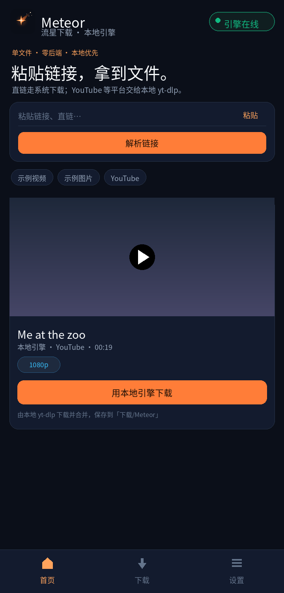
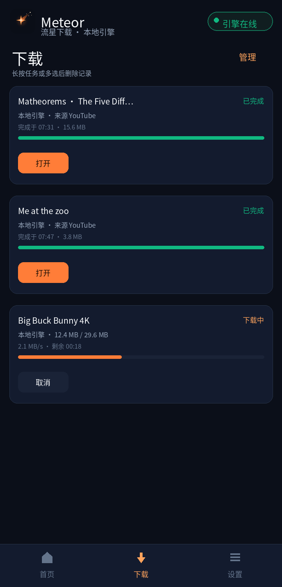
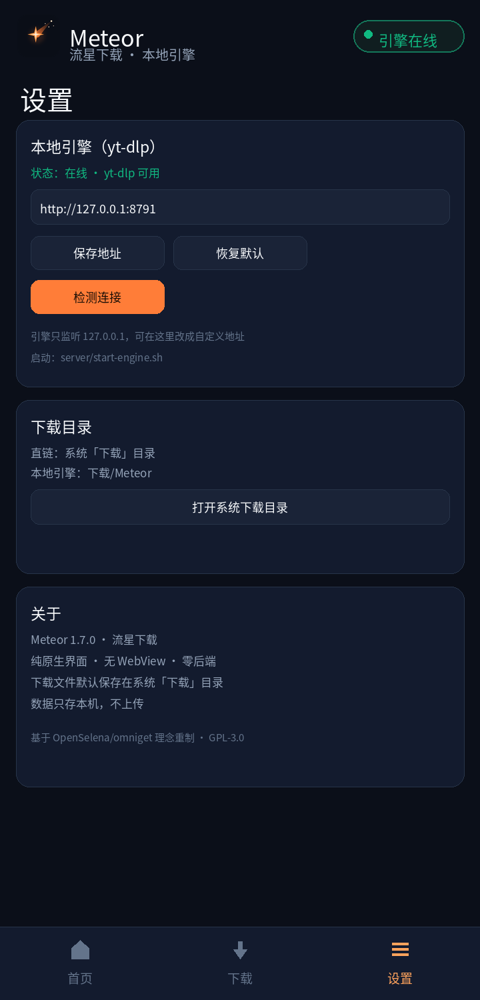

粘贴链接，
拿到文件。
Meteor 把下载这件事做回本机：直链交给系统下载器；YouTube、B站等 1800+ 站点交给手机里的 yt-dlp 引擎。下载完点一下，用系统播放器直接看。

下载器该有的，
一个都不少。
不是套壳网页，也不是云服务。Meteor 是一个跑在你手机上的原生下载工作台。
直连下载
mp4、mp3、图片、PDF、压缩包，粘贴即下。系统 DownloadManager 负责落盘，大文件不进内存。
本地 yt-dlp 引擎
在手机本地跑 yt-dlp + FFmpeg，解析 YouTube、B站等平台，自动合并音视频，全程 127.0.0.1。
系统播放器打开
下载完成点「打开」，直接调系统播放器播放实际文件；4K 等不兼容视频自动转 720p 再播。
多选管理记录
下载记录支持长按多选、批量删除，也可清理已完成。重启 App 记录还在。
保存到系统下载
引擎下载落在「下载/Meteor」，文件管理直接可见；「打开」时再交给系统播放器。
零后端 · 隐私优先
没有账号、没有云端、没有埋点。设置与下载记录只保存在本机，引擎只监听 127.0.0.1。
原生 Android 界面，
点击即响应。
没有 WebView、没有网页壳。输入框、按钮、列表全部是系统原生控件。
首页粘贴链接 · 平台识别 · 画质选择

下载进度 · 速度 · 来源与时间 · 多选

设置引擎地址 · 下载目录 · 关于
两种下载，
都在你手机上完成。
直连文件走 Android 系统能力；平台视频交给本机 yt-dlp。没有中间服务器，也不需要上传任何数据。
粘贴链接
在首页粘贴任意链接，Meteor 自动识别平台与文件类型。
选择方式
直链交给系统下载器；YouTube 等交给本地引擎，可选 1080p / 720p / 仅音频。
点击打开
下载完成保存到「下载/Meteor」，点「打开」用系统播放器直接看。
一个 APK，开始下载。
覆盖安装即可。安装后如需平台视频下载，在 DSH Go 本地环境启动一次引擎。
也可以从 Pages 直链下载：assets/Meteor.apk
几个你可能会问的问题。
需要安装服务器或后端吗？
不需要云端服务。平台视频功能需要一个跑在本机的 yt-dlp 引擎（项目里的 server/），它只监听 127.0.0.1，不经过任何服务器。
为什么平台下载需要本地引擎？
浏览器/沙盒无法运行 yt-dlp 与 FFmpeg。把引擎跑在手机本地，Meteor 通过本机 HTTP 调用它，仍然没有云端。
下载的文件在哪里？
直连文件在系统「下载」目录；引擎下载在「下载/Meteor」。点「打开」会用系统播放器打开实际文件。
支持 4K 吗？
默认限制 1080p 以内并优先 H.264/AAC，保证手机能播；遇到高分辨率视频会自动转 720p 兼容格式。
会上传我的数据吗？
不会。没有账号、没有埋点，设置与记录只保存在本机。
可以自己改引擎地址吗？
可以。设置页可填写任意 http(s) 引擎地址，保存后立即检测连接。